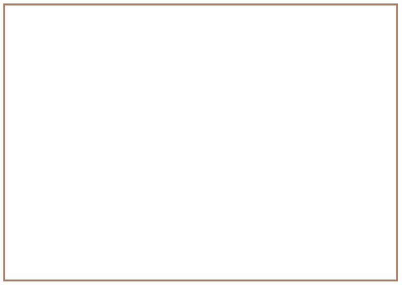

Teken wat jy sien
Kyk weer na tekeninge A en B. Sien jy tekeninge van twee verskillende tafels, of twee verskillende tekeninge van dieselfde tafel? Dink mooi voor jy antwoord.
Kyk na tekening A en tekening B op die vorige bladsy. Kyk ook na tekening C en tekening D op die volgende bladsy. Watter een van die twee tekeninge op die volgende bladsy is dieselfde as tekening A, behalwe dat dit kleiner is? Verduidelik hoekom jy so sê.
Hoe verskil tekeninge C en D van mekaar?
Tekeninge soos dié in Figuur 4 (tekening C) word perspektieftekeninge genoem, of 3D artistieke tekeninge. In 'n perspektieftekening probeer die kunstenaar wys wat jy werklik sien. Jy kan nie van 'n perspektieftekening akkurate afmetings maak nie.
Tekeninge soos dié in Figuur 5 (tekening D) word 3D skuinstekeninge genoem. Hulle lyk anders as dit wat jy in werklikheid sien as jy na die voorwerp kyk. Afmetings kan van 3D skuinstekeninge geneem word.
In die volgende les gaan jy 'n paar 3D skuinstekeninge maak.
Die woord skets word dikwels gebruik vir 'n tekening wat sonder 'n liniaal of ander tekeninstrumente gemaak is.
In plaas daarvan om “skets” te sê kan jy ook vryhandtekening sê.
Iets om tuis te doen
Dit is makliker om 3D tekeninge op geruite papier te maak, soos die voorbeeld op die volgende bladsy. Maak 'n beter tekening van die stoof op die geruite papier. Een van die skuins lyne is reeds getrek.
Skryf die lengte, hoogte en breedte van hierdie stoof neer.
Meet nou die lengte, hoogte en breedte op die tekening met 'n liniaal.
Wat sien jy raak met betrekking tot die breedtelyn? Is dit op dieselfde skaal geteken as die lengte- en hoogtelyn?
'n Paar belangrike dinge oor skuinstekeninge
Vir die vooraansig van 'n skuinstekening is ons afmetings presies soos die skaal sê. Daarom, as die lengte van die voorwerp 600 mm is en die skaal is 1:10, sal jy die lengte 60 cm (600 mm) teken. Maar, in die rigting wat die skuins breedte wys, moet jy die ware skaalafmeting halveer. As die breedte dus 565 mm, en die skaal 1:10 is, moet jy die breedtelyn op 282,5 mm of 28,25 cm teken.
Gebruik die geruite blok op die vorige bladsy om 'n akkurate skuinstekening van die stoof op 'n skaal van 1:5 te maak.

Begin in die onderste hoek aan die linkerkant van jou bladsy en teken 'n heiningpaal. Dit sal die langste paal wees want dit is die naaste aan jou.
Teken 'n punt in die boonste hoek aan die regterkant van die bladsy. Hierdie punt word die verdwynpunt (VP) genoem. Dit verteenwoordig 'n punt so ver weg dat jy nie meer kan sien hoe hoog iets is nie.
Teken 'n dun gidslyn van die bopunt van die voorste paal tot by die verdwynpunt (VP). Jy kan 'n liniaal hiervoor gebruik.
Trek nog 'n dun gidslyn van die onderpunt van die voorste paal tot by die verdwynpunt.
Teken 'n tweede paal agter die eerste een. Die onderste end van hierdie paal moet by die onderste gidslyn begin en die paal hou op by die boonste gidslyn.
Hou aan om nog pale te teken terwyl jy in die rigting van die verdwynpunt beweeg.
Onthou dat die pale sal lyk of hulle nader en nader aan mekaar staan.
Voeg nou 'n paar kruislyne by om die heiningdraad voor te stel.
Maak jou buitelyne dik en teken beskaduwing om jou heiningpale mooi te laat lyk.